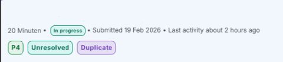
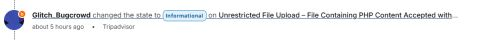
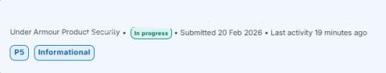
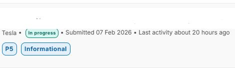
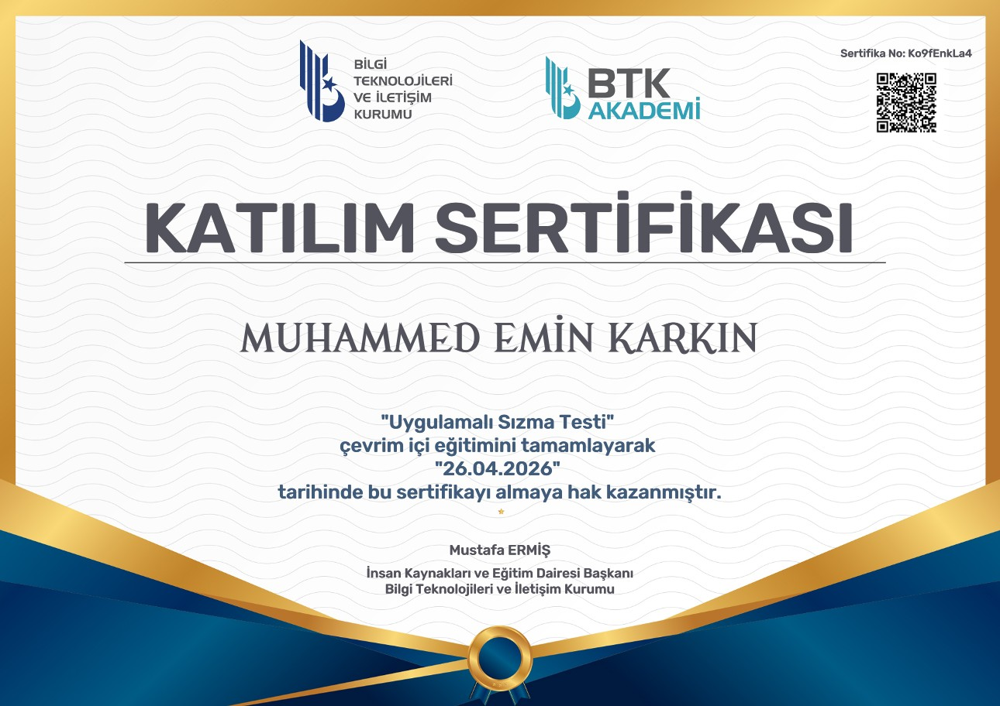
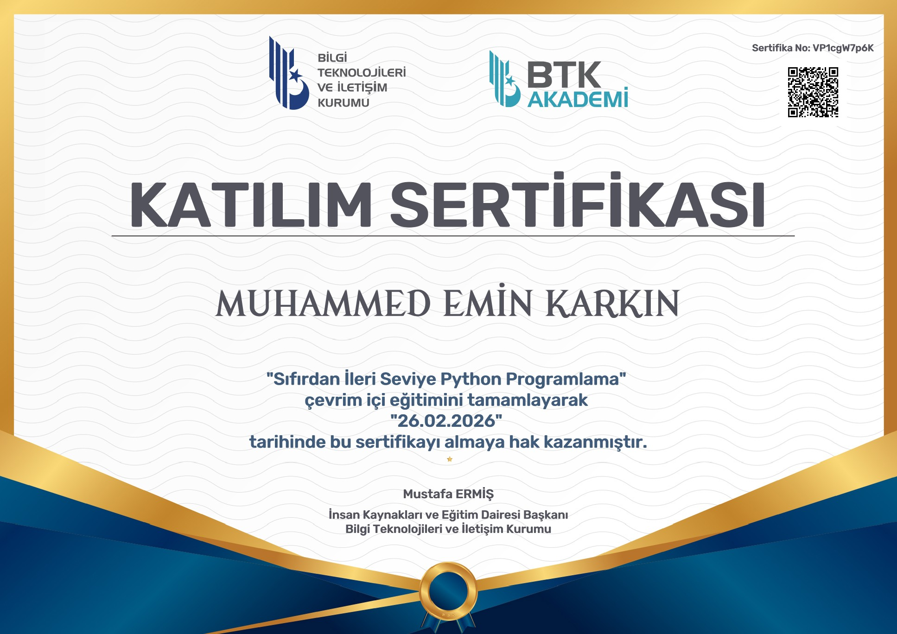
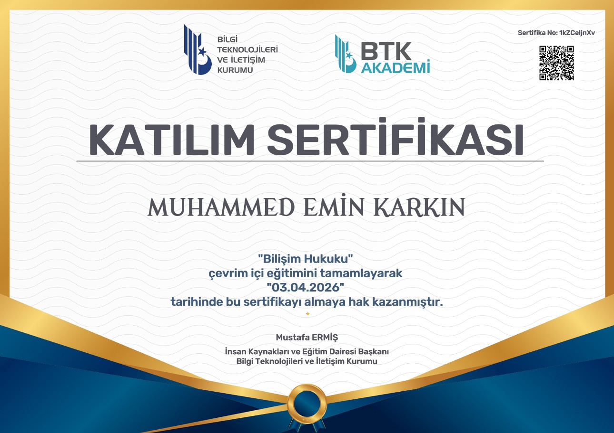

HwyNe olarak tanınan güvenlik araştırmacısı.
15 yaşında, web güvenliği ve bug bounty'e odaklanan,
Tesla · Under Armour · 20 Minuten gibi programlarda
aktif raporlar gönderen ve CTF yarışmalarında deneyim
kazanan araştırmacı.
Pendik İTO Ticaret Mesleki ve Teknik Anadolu Lisesi Bilişim Bölümü 9. sınıf öğrencisiyim. Web güvenliği ve bug bounty'e odaklanıyorum; ödülden çok metodoloji geliştirmeye ve sistemleri anlamaya önem veriyorum.
Birden fazla büyük programa rapor gönderdim; P4 seviyesinde triaj alan bulgularım var. PİTO EduBounty okul gelişim projesi üyesiyim. CTF yarışmalarında Cyber_Cat takımıyla mücadele ediyorum.

Genellikle P5 bulgularla karşılaşırken bu sefer P4 olarak triaj edilen bir bulgu ilettim. Aynı bulgunu başka bir araştırmacı daha önce göndermiş olduğu için Duplicate statüsüyle kapandı.

Dosya yükleme fonksiyonunun yalnızca uzantıya göre doğrulama yaptığını keşfettim. Görsel uzantı kullanılarak görsel olmayan içerik yüklenebildi. Informational olarak kabul edildi.

Teknik bir yapılandırma eksikliği tespit ettim. Doğrudan güvenlik riski oluşturmadığı için P5 Informational olarak derecelendirildi. Eskalasyon metodolojisi üzerine değerli dersler aldım.

Teknik olarak bir zayıflık tespit edildi. Mevcut haliyle doğrudan güvenlik riski teşkil etmediği için Informational olarak değerlendirildi. Sistemin savunma mekanizmalarını analiz etmek adına verimli bir deneyimdi.

26 Nisan 2026 · Ko9fEnkLa4
26 Şubat 2026 · VP1cgW7p6K
03 Nisan 2026 · 1kZCeIjnXv